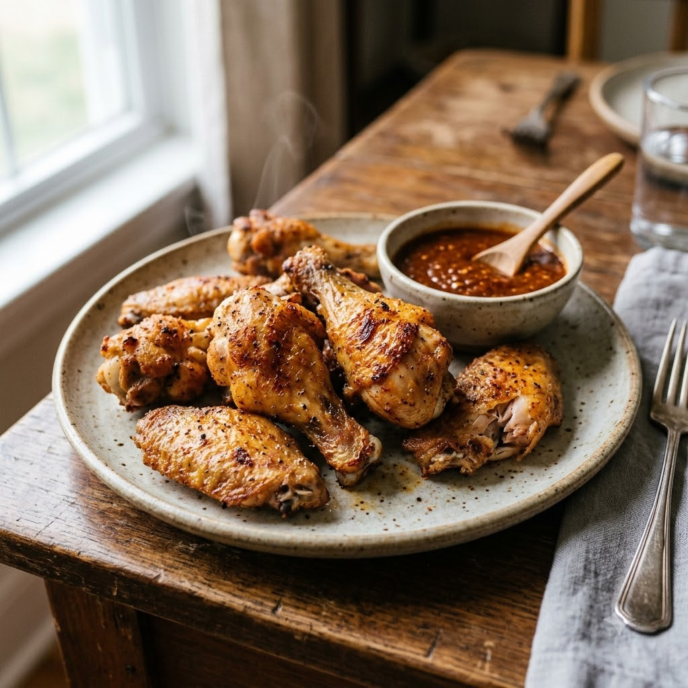

Air Fryer Chicken Wings

Air Fryer Chicken Wings
Airfryer – Fry 200°C 21 min — Serves 4
Ingredients
- 500g chicken wings
- 1 tbsp oil
- 1 tsp black pepper (kali mirch)
- 1 tsp garlic (lehsun) powder
- Salt to taste
- 1 tbsp hot sauce (optional)
Method
1Preheat: Preheat the Airfryer to 200°C for 4 minutes before adding the food to the basket.
2Pat wings dry and toss with oil, garlic powder, pepper and salt.
3Arrange in a single layer in the basket.
4Air-fry at 200°C for 21 minutes, flipping halfway, until skin is crisp and golden.
5Toss in hot sauce while hot, if using.